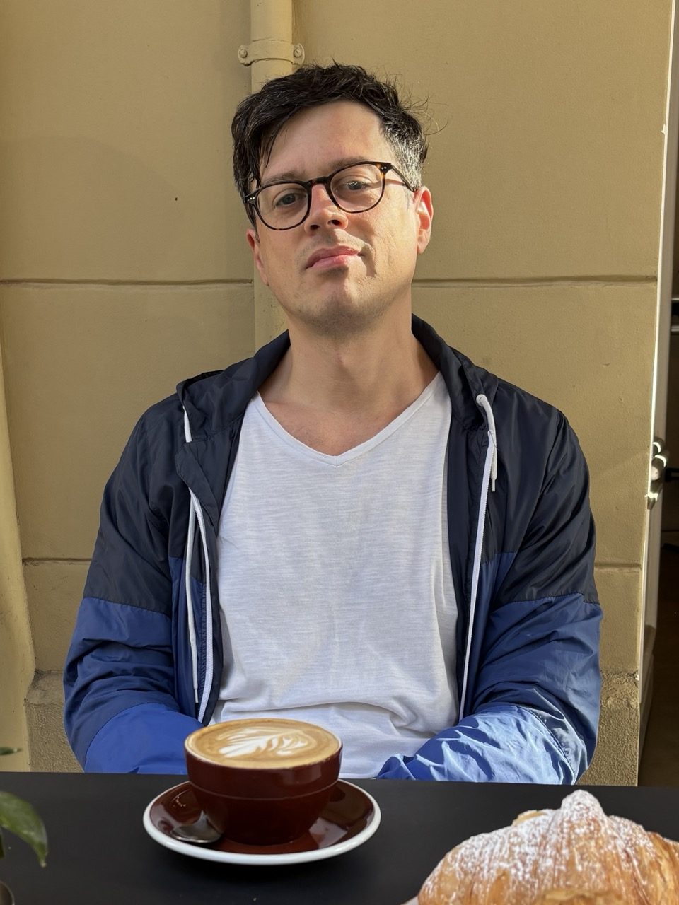

Interested? Want more information?
No commitment. Just send me an email and I'll get back to you.
Email meWho I am.

I'm Alberto Granzotto. Freelance software engineer, 20+ years.
I studied in Padova, Milano, and Southampton, where I worked on semantic web and linked data. My first company was a startup called Urlist, a bookmarking service, in 2012. In 2015 I was a core developer for ascribe, a platform for artists to own digital art the way you own Bitcoin. Nobody was talking about blockchain yet. That pulled me into smart contracts and NFT tools for artists, some of whose work ended up at Centre Pompidou and other museums. I also built a legal framework for DAOs in Estonia that actually runs real companies.
I care about privacy, decentralization, and open source, and I do my best to balance that with the reality of private LLMs.
These days I'm building two AI products: tellfranko.com and mealo.fit. And I teach what I picked up along the way.
FAQ
Why €50?
I'm testing this format with real people. I want honest feedback on what works and what doesn't. You get a real session at a fraction of the price. I get to improve the workshop. Fair deal.
Is it remote or in person?
Remote via FaceTime, Zoom, or Google Meet. If you're in Berlin, you can come to my studio or I come to you.
What do I need to prepare?
Nothing. Bring your laptop.
What software do we use?
Claude Cowork. You need at least a Pro subscription. If you don't have one, I can give you a one-week invite.
Do I need technical experience?
No. This is not about coding. It's about how you work with AI, regardless of your job.
Can you teach me how to build an app with AI?
Yes. I teach vibe coding and how to add guardrails so it doesn't break everything.
Can you automate my workflow?
Yes. If you're doing the same thing every day, I can probably make the AI do it for you.
What about OpenClaw?
It's powerful. It's also easy to lose control: leak secrets, run things you didn't intend, give the AI too much freedom. I teach a different approach: still highly automated, but you stay in control. You know what runs, what gets reviewed, and what stays private.
What else can you do?
I build autonomous sub-agents, custom MCP servers, multi-agent coordination systems. If you need something deeper, let's talk.
I'm not here to tell you you're absolutely right.
The AI already does that.